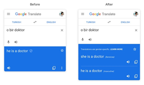
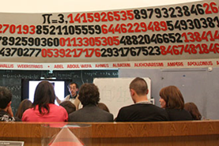
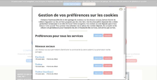

Partie II : Le quotidien professionnel
1. Evolution des métiers
Exemple 1 : Dans le passé les
chaines de productions fonctionnaient à la chaine, avec de nombreux ouvriers qui répétaient
la même tâche continuellement. Aujourd’hui les mouvements simples peuvent être intégrés
dans des programmes liés à des bras robotisés afin d’éviter certaines tâches pénibles à
l’homme. Ainsi certaines questions se posent à propos du chômage par exemple, car les
technologies coûtent parfois moins qu’un employé et certaines entreprises vont donc les
privilégier.
 Travail à la chaine Travail à la chaine |
 Bras mécanique sur une chaine de production
de voitures Bras mécanique sur une chaine de production
de voitures |
Exemple 2 : La science n’aurait sans
doute jamais connu une telle croissance si l’évolution technologique n’avait pas suivi et ne lui
avait pas permis à travers ses nombreuses innovations de confirmer des théories, d’en réfuter
d’autres et d’approfondir de nombreuses connaissances scientifiques qui n’auraient pas été
possible sans ces inventions telles que les accélérateurs de particule, les télescopes ou
encore les satellites. Les deux domaines évoluent de manière parallèle afin de permettre aux
médecins de réaliser de plus en plus de traitements et d’opérations qui n’étaient pas possibles
par le passé, et donc d’accroitre si possible l’espérance de vie humaine.
| Opération chirurgicale à distance |
Exemple 3 : Aujourd’hui des tâches
de plus en plus complexes peuvent être réglées par des intelligences artificielles de plus en
plus efficaces, rapides et à l’éventail de possibilité de plus en plus large. Ainsi il existe
maintenant des IA capables de créer de toute pièces des instrumentales de chansons en quelques
secondes de manière totalement automatisée avec des accords agréables à l’oreille. Cela rend donc
le travail de certains musiciens bien plus léger et permet par exemple de se concentrer davantage
sur le texte. La question de la qualité de la recherche avec cette méthode se pose évidemment.
2. Evolution des moyens d’apprentissage
Exemple 1 : La technologie nous a
également permit d’étudier plus efficacement. Par exemple l’outil traduction sur google permet
de traduire un mot dans presque toutes les langues et ce en quelques secondes alors que dans le
temps il aurait fallu ouvrir un dictionnaire et trouver le mot en question. Il existe aujourd’hui
des outils également mathématiques telles que des calculatrices de plus en plus puissantes, ce qui
permet de faire des découvertes majeures telles que les décimales de Pi de plus en plus loin.
| Interface Google Traduction | Exposition du nombre Pi |
Exemple 2 : Depuis la démocratisation
d’internet dans le monde, celle-ci est devenue une source colossale d’informations grâce à
l’implication de ses nombreux utilisateurs. La grande majorité des personnes ont rejoint la
toile, dont la globalité des entreprises d’information. La longue portée offerte par internet
a été l’opportunité pour de nombreuses entreprises de la presse de publier leurs journaux et
aux auteurs de publier leurs livres, sans parler des fils d’actualités qui se sont grandement
développés comme google actualité. Les utilisateurs ont énormément contribué à rassembler une
grande source d’informations en développant des encyclopédies en ligne comme Wikipédia. A l’heure
actuelle il est possible de trouver une information sur n’importe quel sujet, allant même jusqu’à
obtenir des cours des Universités prestigieuses telles que Harvard.
| Wikipédia | Université d’Harvard |
Exemple 3 : Des plateformes telles que
Classroom permettent de retrouver des cours très rapidement et en libre accès ce qui rend
l’apprentissage plus accessible. Il est également de trouver des cours sous toutes les formes
(vidéo, livres, articles). Aujourd’hui se cultiver sur tous les sujets est bien plus simple,
il n’est plus nécessaire d’acheter une encyclopédie pour se mettre au jardinage par exemple.
Il suffit de chercher sur internet en quelques clics et d’aller de l’avant très rapidement.
| Site pédagogique OpenClassroom |
3. La technologie dans le commerce
Exemple 1 : La technologie nous permet
de pouvoir acheter ce que l’on souhaite de chez nous par exemple Amazon nous propose de pouvoir
acheter sur son site énormément de produits différents le tout livré dans un laps de temps plus
que raisonnable et en restant chez soi. Les marques de tout bord se dirigent toutes vers l’e-commerce
qui est aujourd’hui un marché important voir primordial. Les clients recherchent la rapidité et le
choix plutôt que d’aller en grande surface.
| Amazon | Entrepôt Amazon |
Exemple 2 : A notre époque tous les
milieux se dirigent vers la dématérialisation et l’argent ne fait pas exception. Aujourd’hui
les transactions se font majoritairement par virement bancaires (de manière plutôt sécurisée
même si les risques de piratages restent encore trop importants) et on voit même apparaitre
des monnaies indépendantes des Etats et entièrement numériques qui prennent une ampleur ces
dernières années. Par exemple le bitcoin qui a vu sa valeur exploser en seulement quelques
années.
| Cartes bancaires | Monnaie numérique (Bitcoin) |
Exemple 3 : La présence des cookies
sur les sites internet permet d’analyser le comportement de ses utilisateurs, les pages les plus
consultées, leurs centres d’intérêt, afin de réaliser des sondages et plus particulièrement réaliser
des publicités ciblées en fonction du profil de l’utilisateur. On peut alors se demander si ces
cookies ne sont pas une violation de notre vie privée. La publicité est omniprésente sur les sites
internet car elle est la principale source de financement de ces mêmes sites. Même si aujourd’hui
il est possible de les contourner avec des extensions comme adblock, certains sites n’ont d’autre
choix que d’interdire l’utilisation de cette extension si elles espèrent subsister.
| Cookies page web | Bloqueur de publicités AdBlock |
| Publicités page web | |